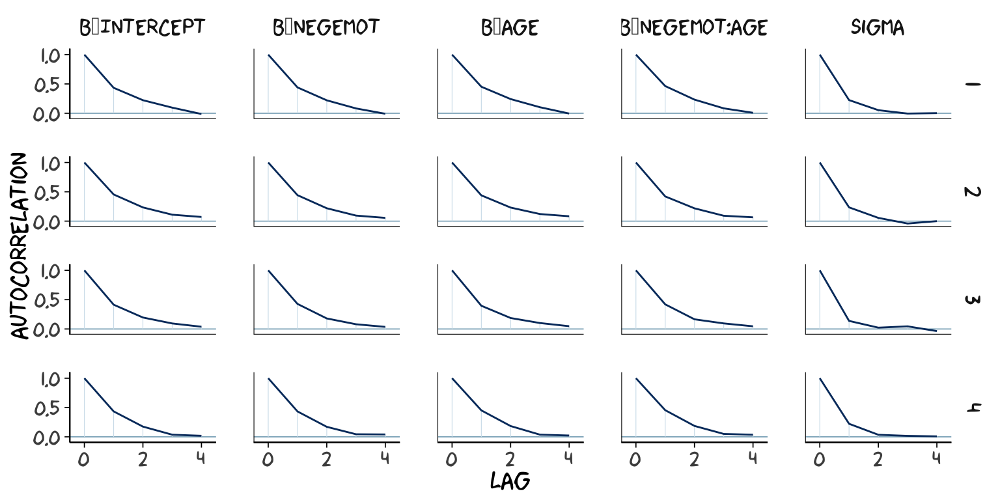
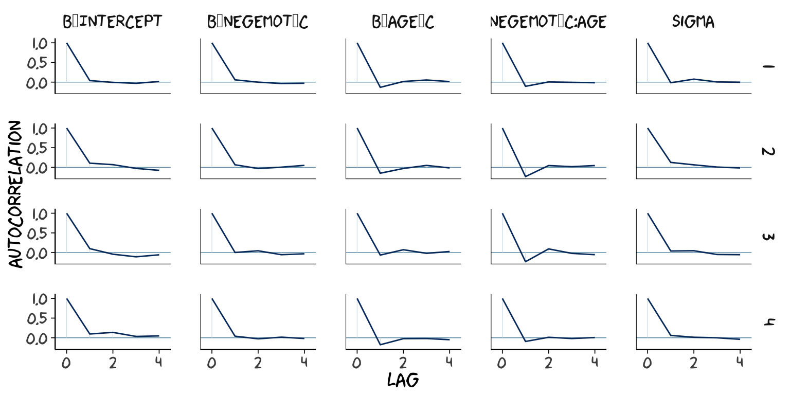

9.1 Truths and myths about mean-centering
Here we load a couple necessary packages, load the data, and take a glimpse().
library(tidyverse)
glbwarm <- read_csv("data/glbwarm/glbwarm.csv")
glimpse(glbwarm)## Observations: 815
## Variables: 7
## $ govact <dbl> 3.6, 5.0, 6.6, 1.0, 4.0, 7.0, 6.8, 5.6, 6.0, 2.6, 1.4, 5.6, 7.0, 3.8, 3.4, 4.2, 1.0...
## $ posemot <dbl> 3.67, 2.00, 2.33, 5.00, 2.33, 1.00, 2.33, 4.00, 5.00, 5.00, 1.00, 4.00, 1.00, 5.67,...
## $ negemot <dbl> 4.67, 2.33, 3.67, 5.00, 1.67, 6.00, 4.00, 5.33, 6.00, 2.00, 1.00, 4.00, 5.00, 4.67,...
## $ ideology <int> 6, 2, 1, 1, 4, 3, 4, 5, 4, 7, 6, 4, 2, 4, 5, 2, 6, 4, 2, 4, 4, 2, 6, 4, 4, 3, 4, 5,...
## $ age <int> 61, 55, 85, 59, 22, 34, 47, 65, 50, 60, 71, 60, 71, 59, 32, 36, 69, 70, 41, 48, 38,...
## $ sex <int> 0, 0, 1, 0, 1, 0, 1, 1, 1, 1, 1, 0, 1, 0, 1, 1, 1, 0, 0, 0, 0, 1, 1, 1, 1, 1, 1, 0,...
## $ partyid <int> 2, 1, 1, 1, 1, 2, 1, 1, 2, 3, 2, 1, 1, 1, 1, 1, 2, 3, 1, 3, 2, 1, 3, 2, 1, 1, 1, 3,...Before we fit our models, we’ll go ahead and make our mean-centered predictors, negemot_c and age_c.
glbwarm <-
glbwarm %>%
mutate(negemot_c = negemot - mean(negemot),
age_c = age - mean(age))Now we’re ready to fit Models 1 and 2. But before we do, it’s worth repeating part of the text:
Mean-centering has been recommended in a few highly regarded books on regression analysis (e.g., Aiken & West, 1991; Cohen et al., 2003), and several explanations have been offered for why mean-centering should be undertaken prior to computation of the product and model estimation. The explanation that seems to have resulted in the most misunderstanding is that \(X\) and \(W\) are likely to be highly correlated with \(XW\) and this will produce estimation problems caused by collinearity and result in poor or “strange” estimates of regression coefficients, large standard errors, and reduced power of the statistical test of the interaction. But his is, in large part, simply a myth. (p. 304)
Let’s load brms.
library(brms)As we’ll see in just a bit, there are some important reasons for Bayesians using HMC to mean center that wouldn’t pop up within the OLS paradigm. First let’s fit model1 and model2.
model1 <-
brm(data = glbwarm, family = gaussian,
govact ~ 1 + negemot + age + negemot:age,
chains = 4, cores = 4)
model2 <-
update(model1, newdata = glbwarm,
govact ~ 1 + negemot_c + age_c + negemot_c:age_c,
chains = 4, cores = 4)As with Hayes’s OLS models, our HMC models yield the same Bayesian \(R^2\) distributions, within simulation error.
bayes_R2(model1) %>% round(digits = 3)## Estimate Est.Error Q2.5 Q97.5
## R2 0.354 0.021 0.311 0.394bayes_R2(model2) %>% round(digits = 3)## Estimate Est.Error Q2.5 Q97.5
## R2 0.354 0.021 0.31 0.395Our model summaries also correspond nicely with those in Table 9.1.
print(model1, digits = 3)## Family: gaussian
## Links: mu = identity; sigma = identity
## Formula: govact ~ 1 + negemot + age + negemot:age
## Data: glbwarm (Number of observations: 815)
## Samples: 4 chains, each with iter = 2000; warmup = 1000; thin = 1;
## total post-warmup samples = 4000
##
## Population-Level Effects:
## Estimate Est.Error l-95% CI u-95% CI Eff.Sample Rhat
## Intercept 4.343 0.333 3.705 5.008 1682 1.000
## negemot 0.145 0.086 -0.026 0.312 1598 1.000
## age -0.031 0.006 -0.043 -0.019 1663 1.000
## negemot:age 0.007 0.002 0.004 0.010 1595 1.000
##
## Family Specific Parameters:
## Estimate Est.Error l-95% CI u-95% CI Eff.Sample Rhat
## sigma 1.097 0.028 1.045 1.155 2553 1.001
##
## Samples were drawn using sampling(NUTS). For each parameter, Eff.Sample
## is a crude measure of effective sample size, and Rhat is the potential
## scale reduction factor on split chains (at convergence, Rhat = 1).print(model2, digits = 3)## Family: gaussian
## Links: mu = identity; sigma = identity
## Formula: govact ~ negemot_c + age_c + negemot_c:age_c
## Data: glbwarm (Number of observations: 815)
## Samples: 4 chains, each with iter = 2000; warmup = 1000; thin = 1;
## total post-warmup samples = 4000
##
## Population-Level Effects:
## Estimate Est.Error l-95% CI u-95% CI Eff.Sample Rhat
## Intercept 4.597 0.038 4.525 4.674 3777 1.000
## negemot_c 0.501 0.025 0.452 0.551 3322 1.000
## age_c -0.005 0.002 -0.010 -0.001 4000 0.999
## negemot_c:age_c 0.007 0.002 0.004 0.010 4000 0.999
##
## Family Specific Parameters:
## Estimate Est.Error l-95% CI u-95% CI Eff.Sample Rhat
## sigma 1.097 0.028 1.044 1.154 3563 1.000
##
## Samples were drawn using sampling(NUTS). For each parameter, Eff.Sample
## is a crude measure of effective sample size, and Rhat is the potential
## scale reduction factor on split chains (at convergence, Rhat = 1).However, notice the ‘Eff.Sample’ columns. The values for model2 were substantially larger than those for model1. ‘Eff.Sample’ is Bürkner’s term for the number of effective samples. Recall that because we’ve been using brms defaults, we have 4 HMC chains, each of which contains 2000 draws (iterations), the first 1000 of which are warmup values. After we discard the warmup values, that leaves 1000 draws from each chain–4000 total. As it turns out, Markov chains, and thus HMC chains, are typically autocorrelated, which means that each draw is partially dependent on the previous draw. Ideally, the autocorrelations are near zero. That’s often not the case.
The bayesplot package offers a variety of diagnostic plots. Here we’ll use the mcmc_acf() function to make autocorrelation plots for all model parameters. Note that when we add add_chain = T to brms::posterior_samples(), we add an index to the data that allows us to keep track of which iteration comes from which chain. That index will come in handy for our mcmc_acf() plots.
But before we get there, we’ll be using an xkcd-inspired theme with help from the xkcd package for our plots in this chapter.
# install.packages("xkcd", dependencies = T)
library(xkcd)If you haven’t used the xkcd package, before, you might also need to take a few extra steps outlined here, part of which requires help from the extrafont package,
library(extrafont)
download.file("http://simonsoftware.se/other/xkcd.ttf",
dest = "xkcd.ttf", mode = "wb")
system("mkdir ~/.fonts")
system("cp xkcd.ttf ~/.fonts")
# This line of code returned an error message
# font_import(pattern = "[X/x]kcd", prompt = FALSE)
# This line from (https://stackoverflow.com/questions/49221040/error-in-font-import-while-installing-xkcd-font) fixed the problem
font_import(path = "~/.fonts", pattern = "[X/x]kcd", prompt=FALSE)
fonts()
fonttable()
if(.Platform$OS.type != "unix") {
## Register fonts for Windows bitmap output
loadfonts(device="win")
} else {
loadfonts()
}After installing, I still experienced error messages, which were alleviated after I followed these steps outlined by Remi.b. You may or may not need them.
But anyways, here are our mcmc_acf() plots.
library(bayesplot)
post1 <- posterior_samples(model1, add_chain = T)
mcmc_acf(post1,
pars = c("b_Intercept", "b_negemot", "b_age", "b_negemot:age", "sigma"),
lags = 4) +
theme_xkcd()
post2 <- posterior_samples(model2, add_chain = T)
mcmc_acf(post2,
pars = c("b_Intercept", "b_negemot_c", "b_age_c", "b_negemot_c:age_c", "sigma"),
lags = 4) +
theme_xkcd() As it turns out, theme_xkcd() can’t handle special characters like “_“, so it returns rectangles instead. So it goes…
But again, high autocorrelations in the HMC chains have consequences for the effective sample size. In the Visual MCMC diagnostics using the bayesplot package vignette, Gabry wrote:
The effective sample size is an estimate of the number of independent draws from the posterior distribution of the estimand of interest. Because the draws within a Markov chain are not independent if there is autocorrelation, the effective sample size, \(n_{eff}\), will be smaller than the total sample size, \(N\). The larger the ratio of \(n_{eff}\) to \(N\) the better.
The ‘Eff.Sample’ values were all close to 4000 with model2 and the autocorrelations were very low, too. The reverse was true for model1. The upshot is that even though we have 4000 samples for each parameter, those samples don’t necessarily give us the same quality of information fully independent samples would. ‘Eff.Sample’ helps you determine how concerned you should be. And, as it turns out, things like centering can help increase a models ‘Eff.Sample’ values.
Wading in further, we can use the neff_ratio() function to collect the \(n_{eff}\) to \(N\) ratio for each model parameter and then use mcmc_neff() to make a visual diagnostic. Here we do so for model1 and model2.
ratios_model1 <-
neff_ratio(model1,
pars = c("b_Intercept", "b_negemot", "b_age", "b_negemot:age", "sigma"))
ratios_model2 <-
neff_ratio(model2,
pars = c("b_Intercept", "b_negemot_c", "b_age_c", "b_negemot_c:age_c", "sigma"))
mcmc_neff(ratios_model1) +
yaxis_text(hjust = 0) +
theme_xkcd()
mcmc_neff(ratios_model2) +
yaxis_text(hjust = 0) +
theme_xkcd()
Although none of the \(n_{eff}\) to \(N\) ratios were in the shockingly-low range for either model, there were substantially closer to 1 for model2.
In addition to autocorrelations and \(n_{eff}\) to \(N\) ratios, there is also the issue that the parameters in the model can themselves be correlated. If you like a visual approach, you can use brms::pairs() to retrieve histograms for each parameter along with scatter plots showing the shape of their correlations. Here we’ll use the off_diag_args argument to customize some of the plot settings.
pairs(model1,
off_diag_args = list(size = 1/10,
alpha = 1/5))
pairs(model2,
off_diag_args = list(size = 1/10,
alpha = 1/5))
When fitting models with HMC, centering can make a difference for the parameter correlations. If you prefer a more numeric approach, vcov() will yield the variance/covariance matrix–or correlation matrix when using correlation = T–for the parameters in a model.
vcov(model1, correlation = T) %>% round(digits = 2)## Intercept negemot age negemot:age
## Intercept 1.00 -0.93 -0.96 0.88
## negemot -0.93 1.00 0.89 -0.96
## age -0.96 0.89 1.00 -0.92
## negemot:age 0.88 -0.96 -0.92 1.00vcov(model2, correlation = T) %>% round(digits = 2)## Intercept negemot_c age_c negemot_c:age_c
## Intercept 1.00 0.02 0.03 0.05
## negemot_c 0.02 1.00 0.05 -0.09
## age_c 0.03 0.05 1.00 -0.01
## negemot_c:age_c 0.05 -0.09 -0.01 1.00And so wait, what does that even mean for a parameter to correlate with another parameter? you might ask. Fair enough. Let’s compute a correlation step by step. First, posterior_samples():
post <- posterior_samples(model1)
head(post)## b_Intercept b_negemot b_age b_negemot:age sigma lp__
## 1 4.601742 0.11579358 -0.03407338 0.007279384 1.103365 -1235.889
## 2 4.374973 0.12836145 -0.03303011 0.008040433 1.092021 -1235.508
## 3 4.468470 0.09774705 -0.03503205 0.008483724 1.120604 -1235.919
## 4 4.476113 0.10907074 -0.03525339 0.008603188 1.090927 -1236.579
## 5 4.269829 0.17040481 -0.03090699 0.007015664 1.114033 -1235.271
## 6 4.690371 0.07817528 -0.03894929 0.008895996 1.136302 -1237.102Now we’ve put our posterior iterations into a data object, post, we can make a scatter plot of two parameters. Here we’ll choose b_negemot and the interaction coefficient, b_negemot:age.
post %>%
ggplot(aes(x = b_negemot, y = `b_negemot:age`)) +
geom_point(size = 1/10, alpha = 1/5) +
labs(subtitle = "Each dot is the parameter pair\nfrom a single iteration. Looking\nacross the 4,000 total posterior\niterations, it becomes clear the\ntwo parameters are highly\nnegatively correlated.") +
theme_xkcd()
And indeed, the Pearson’s correlation is:
cor(post$b_negemot, post$`b_negemot:age`)## [1] -0.9571633And what was that part from the vcov() output, again?
vcov(model1, correlation = T)["negemot", "negemot:age"]## [1] -0.9571633Boom! That’s where the correlations come from.
This entire topic of HMC diagnostics can seem baffling, especially when compared to the simplicity of OLS. If this is your first introduction, you might want to watch lectures 10 and 11 from McElreath’s Statistical Rethinking Fall 2017 lecture series. Accordingly, you might check out chapter 8 of his Statistical Rethinking text and my project explaining how to reproduce the analyses in that chapter in brms.
9.1.1 The effect of mean-centering on multicollinearity and the standard error of \(b_{3}\).
This can be difficult to keep track of, but what we just looked at were the correlations among model parameters. These are not the same as correlations among variables. As such, those correlations are not the same as those in Table 9.2. But we can get those, too. First we’ll have to do a little more data processing to get all the necessary mean-centered variables and standardized variables.
glbwarm <-
glbwarm %>%
mutate(negemot_x_age = negemot*age,
negemot_c_x_age_c = negemot_c*age_c,
negemot_z = (negemot - mean(negemot))/sd(negemot),
age_z = (age - mean(age) )/sd(age)) %>%
mutate(negemot_z_x_age_z = negemot_z*age_z)And recall that to get our sweet Bayesian correlations, we use the multivariate cbind() syntax to fit an intercepts-only model. Here we do that for all three of the Table 9.2 sections.
correlations1 <-
brm(data = glbwarm, family = gaussian,
cbind(negemot, age, negemot_x_age) ~ 1,
chains = 4, cores = 4)
correlations2 <-
brm(data = glbwarm, family = gaussian,
cbind(negemot_c, age_c, negemot_c_x_age_c) ~ 1,
chains = 4, cores = 4)
correlations3 <-
brm(data = glbwarm, family = gaussian,
cbind(negemot_z, age_z, negemot_z_x_age_z) ~ 1,
chains = 4, cores = 4)Their summaries:
print(correlations1, digits = 3)## Family: MV(gaussian, gaussian, gaussian)
## Links: mu = identity; sigma = identity
## mu = identity; sigma = identity
## mu = identity; sigma = identity
## Formula: negemot ~ 1
## age ~ 1
## negemot_x_age ~ 1
## Data: glbwarm (Number of observations: 815)
## Samples: 4 chains, each with iter = 2000; warmup = 1000; thin = 1;
## total post-warmup samples = 4000
##
## Population-Level Effects:
## Estimate Est.Error l-95% CI u-95% CI Eff.Sample Rhat
## negemot_Intercept 3.558 0.054 3.454 3.664 3395 1.000
## age_Intercept 49.513 0.573 48.377 50.620 3429 1.000
## negemotxage_Intercept 174.771 3.434 167.802 181.368 2955 1.000
##
## Family Specific Parameters:
## Estimate Est.Error l-95% CI u-95% CI Eff.Sample Rhat
## sigma_negemot 1.529 0.038 1.458 1.606 2564 1.001
## sigma_age 16.359 0.397 15.605 17.161 3319 1.000
## sigma_negemotxage 97.422 2.363 92.860 102.135 2674 1.000
## rescor(negemot,age) -0.059 0.035 -0.128 0.010 3520 1.000
## rescor(negemot,negemotxage) 0.765 0.015 0.735 0.793 2526 1.001
## rescor(age,negemotxage) 0.548 0.024 0.499 0.594 4000 1.000
##
## Samples were drawn using sampling(NUTS). For each parameter, Eff.Sample
## is a crude measure of effective sample size, and Rhat is the potential
## scale reduction factor on split chains (at convergence, Rhat = 1).print(correlations2, digits = 3)## Family: MV(gaussian, gaussian, gaussian)
## Links: mu = identity; sigma = identity
## mu = identity; sigma = identity
## mu = identity; sigma = identity
## Formula: negemot_c ~ 1
## age_c ~ 1
## negemot_c_x_age_c ~ 1
## Data: glbwarm (Number of observations: 815)
## Samples: 4 chains, each with iter = 2000; warmup = 1000; thin = 1;
## total post-warmup samples = 4000
##
## Population-Level Effects:
## Estimate Est.Error l-95% CI u-95% CI Eff.Sample Rhat
## negemotc_Intercept 0.000 0.053 -0.102 0.106 4000 0.999
## agec_Intercept 0.005 0.566 -1.095 1.110 4000 0.999
## negemotcxagec_Intercept -1.422 0.859 -3.115 0.251 4000 1.000
##
## Family Specific Parameters:
## Estimate Est.Error l-95% CI u-95% CI Eff.Sample Rhat
## sigma_negemotc 1.533 0.039 1.460 1.611 4000 0.999
## sigma_agec 16.372 0.410 15.606 17.180 4000 0.999
## sigma_negemotcxagec 24.247 0.620 23.072 25.476 4000 0.999
## rescor(negemotc,agec) -0.056 0.035 -0.124 0.014 4000 1.000
## rescor(negemotc,negemotcxagec) 0.092 0.034 0.023 0.159 4000 1.000
## rescor(agec,negemotcxagec) -0.015 0.036 -0.084 0.057 4000 1.000
##
## Samples were drawn using sampling(NUTS). For each parameter, Eff.Sample
## is a crude measure of effective sample size, and Rhat is the potential
## scale reduction factor on split chains (at convergence, Rhat = 1).print(correlations3, digits = 3)## Family: MV(gaussian, gaussian, gaussian)
## Links: mu = identity; sigma = identity
## mu = identity; sigma = identity
## mu = identity; sigma = identity
## Formula: negemot_z ~ 1
## age_z ~ 1
## negemot_z_x_age_z ~ 1
## Data: glbwarm (Number of observations: 815)
## Samples: 4 chains, each with iter = 2000; warmup = 1000; thin = 1;
## total post-warmup samples = 4000
##
## Population-Level Effects:
## Estimate Est.Error l-95% CI u-95% CI Eff.Sample Rhat
## negemotz_Intercept -0.000 0.035 -0.069 0.069 4000 0.999
## agez_Intercept -0.000 0.035 -0.068 0.066 4000 0.999
## negemotzxagez_Intercept -0.057 0.035 -0.124 0.012 4000 0.999
##
## Family Specific Parameters:
## Estimate Est.Error l-95% CI u-95% CI Eff.Sample Rhat
## sigma_negemotz 1.003 0.025 0.957 1.053 4000 1.000
## sigma_agez 1.002 0.025 0.956 1.051 4000 1.000
## sigma_negemotzxagez 0.972 0.024 0.927 1.022 4000 1.000
## rescor(negemotz,agez) -0.056 0.035 -0.124 0.013 4000 1.000
## rescor(negemotz,negemotzxagez) 0.091 0.035 0.024 0.161 4000 1.000
## rescor(agez,negemotzxagez) -0.014 0.035 -0.083 0.053 4000 1.000
##
## Samples were drawn using sampling(NUTS). For each parameter, Eff.Sample
## is a crude measure of effective sample size, and Rhat is the potential
## scale reduction factor on split chains (at convergence, Rhat = 1).A more condensed way to get that information might be with the VarCorr() function. Just make sure to tack $residual__$cor onto the end.
VarCorr(correlations1)$residual__$cor %>%
round(digits = 3)## , , negemot
##
## Estimate Est.Error Q2.5 Q97.5
## negemot 1.000 0.000 1.000 1.000
## age -0.059 0.035 -0.128 0.010
## negemotxage 0.765 0.015 0.735 0.793
##
## , , age
##
## Estimate Est.Error Q2.5 Q97.5
## negemot -0.059 0.035 -0.128 0.010
## age 1.000 0.000 1.000 1.000
## negemotxage 0.548 0.024 0.499 0.594
##
## , , negemotxage
##
## Estimate Est.Error Q2.5 Q97.5
## negemot 0.765 0.015 0.735 0.793
## age 0.548 0.024 0.499 0.594
## negemotxage 1.000 0.000 1.000 1.000For the sake of space, I’ll let you check that out for correlations2 and correlations3. If you’re tricky with your VarCorr() indexing, you can also get the model-implied variances.
VarCorr(correlations1)$residual__$cov[1, , "negemot"] %>% round(digits = 3)## Estimate Est.Error Q2.5 Q97.5
## 2.341 0.116 2.126 2.578VarCorr(correlations1)$residual__$cov[2, , "age"] %>% round(digits = 3)## Estimate Est.Error Q2.5 Q97.5
## 267.775 13.017 243.525 294.496VarCorr(correlations1)$residual__$cov[3, , "negemotxage"] %>% round(digits = 3)## Estimate Est.Error Q2.5 Q97.5
## 9496.592 460.872 8622.952 10431.460And if you’re like totally lost with all this indexing, you might code VarCorr(correlations1) %>% str() and spend a little time looking at what VarCorr() produces.
On page 309, Hayes explained why the OLS variance for \(b_{3}\) is unaffected by mean centering. The story was similar for our HMC model, too:
fixef(model1)["negemot:age", "Est.Error"]## [1] 0.001609585fixef(model2)["negemot_c:age_c", "Est.Error"]## [1] 0.001554206For more details, you might also see the 28.11. Standardizing Predictors and Outputs subsection of the Stan Modeling Language User’s Guide and Reference Manual, 2.17.0–Stan, of course, being the computational engine underneath our brms hood.
9.1.2 The effect of mean-centering on \(b_{1}\), \(b_{2}\), and their standard errors posterior \(SD\)s.
If you only care about posterior means, you can reproduce the results at the bottom of page 310 like:
fixef(model1)["negemot", 1] +
fixef(model1)["negemot:age", 1]*mean(glbwarm$age)## [1] 0.5009198But we’re proper Bayesians and like a summary of the spread in the posterior. So we’ll evoke posterior_samples() and the other usual steps.
post <- posterior_samples(model1)
post %>%
transmute(our_contidional_effect_given_W_bar = b_negemot + `b_negemot:age`*mean(glbwarm$age)) %>%
summarize(mean = mean(our_contidional_effect_given_W_bar),
sd = sd(our_contidional_effect_given_W_bar)) %>%
round(digits = 3)## mean sd
## 1 0.501 0.025And note how the standard error Hayes computed at the top of page 311 corresponds nicely with the posterior \(SD\) we just computed. Hayes employed a fancy formula; we just used sd().
9.1.3 The centering option in PROCESS.
I’m not aware of a similar function in brms. You’ll have to use your data wrangling skills.